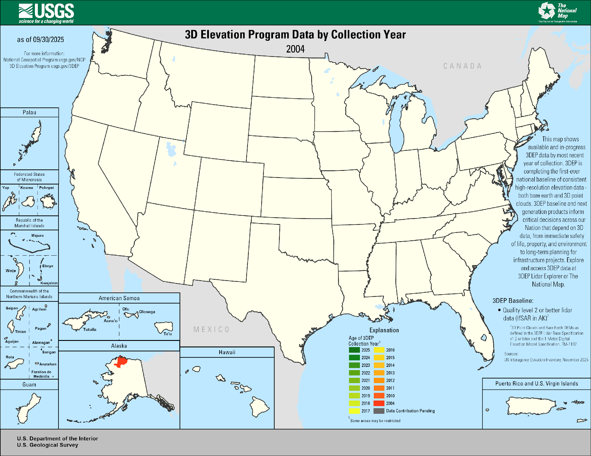
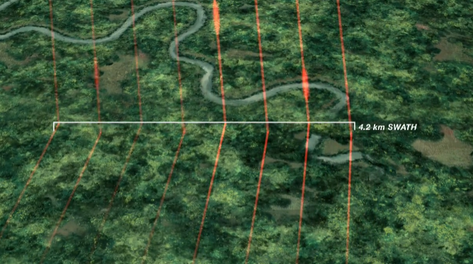

LiDAR Datasets
LiDAR datasets organized by acquisition platform — airborne, spaceborne, and ground-based terrestrial scanners — plus derived global products and multi-source data portals.
Airborne LiDAR
Airborne discrete-return and full-waveform LiDAR sensors flown on aircraft, providing high-density point clouds for terrain mapping, forest structure, and urban analysis.
USGS 3DEP — Urban Forest Near Central Park, New York City
The datasets shown here are airborne LiDAR point clouds from two open-access programs: the USGS 3D Elevation Program (3DEP), a nationwide topographic mapping initiative, and the NEON Airborne Observation Platform (AOP), which collects high-density ecological LiDAR across NEON field sites. Both programs provide data freely to the public.
Source: USGS 3DEP · NAD83(2011) / UTM Zone 18N Area: ~2.04 km² · Points: 2.21 million · Density: ~1.08 pts/m² Elevation range: −10 m to +385 m (ground to building rooftops)

This tile covers a section of Manhattan adjacent to Central Park. The map below shows the exact footprint of the dataset on a satellite basemap.
The 3D viewer below renders the point cloud colored by elevation. Rotate with left-click, pan with right-click, and scroll to zoom. The tall peaks (orange–red) are Manhattan skyscrapers; the flat ground surface and below-grade infrastructure appear in purple–blue.
NEON AOP — Small Tree Plot
Source: NEON Airborne Observation Platform · WGS 84 / UTM Zone 6N Area: ~399 m² · Points: 10.4 thousand · Density: ~26 pts/m² Elevation range: 0 m to 17.3 m (ground to crown top)
A high-density NEON AOP scan (~20 m × 20 m) of a small tree stand. At 26 pts/m² the scan resolves individual tree crowns and branching structure in detail. All points are shown — no subsampling. Colors show elevation from ground (dark green) to canopy top (yellow).
LVIS — Land, Vegetation, and Ice Sensor (NASA)
LVIS is a NASA airborne full-waveform LiDAR system designed for high-sensitivity vegetation and ice surface profiling. Unlike discrete-return systems, LVIS records the complete waveform of each laser return, enabling retrieval of canopy vertical structure (plant area index, foliage profiles) and ground elevation simultaneously — similar to GEDI but from airborne campaigns with higher density.
Agency: NASA Goddard Space Flight Center Sensor: Full-waveform 1064 nm LiDAR (airborne) Footprint size: ~10–25 m diameter (varies with aircraft altitude) Along-track density: Variable; typically higher than spaceborne systems (~1–5 footprints/m along-track) Coverage: Campaign-based; missions include Amazon, Congo, boreal forests (Canada/Alaska), Greenland Ice Sheet, Antarctic Peninsula, African savannas Key products: Ground elevation, canopy top height, waveform-derived plant area density profiles, RH metrics comparable to GEDI Key applications: Forest biomass calibration/validation, tropical and boreal canopy structure, ice surface change, comparison studies with GEDI and ICESat-2
LVIS data are freely available through NASA EarthData and the LVIS project website.
Spaceborne LiDAR
Satellite-borne LiDAR instruments providing global coverage of surface elevation, canopy height, and biomass at footprint scales.
GEDI

GEDI is a full-waveform LiDAR instrument mounted on the International Space Station. It provides high-resolution measurements of forest vertical structure, canopy height, and above-ground biomass at global scale.
Agency: NASA Goddard Space Flight Center Sensor: Three 1064 nm full-waveform LiDAR lasers Footprint size: ~25 m diameter Along-track spacing: ~60 m · Cross-track spacing: ~600 m Coverage: ~51.6°N to 51.6°S (ISS orbital range) Key products: Canopy height (RH metrics), Plant Area Index (PAI), Above-ground biomass density (AGBD)
GEDI data are freely available through NASA EarthData and Google Earth Engine.
ICESat-2 — NASA
ICESat-2 (Ice, Cloud, and land Elevation Satellite-2) uses a photon-counting LiDAR (ATLAS) to measure surface elevation globally with centimeter-level precision. While primarily designed for ice sheet and sea ice monitoring, ICESat-2 is increasingly used for global forest canopy height estimation and terrain mapping.
Agency: NASA Goddard Space Flight Center Sensor: ATLAS (Advanced Topographic Laser Altimeter System) — 532 nm photon-counting LiDAR Footprint size: ~17 m diameter Along-track spacing: ~0.7 m (photon level) Beam configuration: 3 pairs of strong/weak beams (6 beams total) Temporal resolution: 91-day exact repeat cycle Coverage: Global, up to ±88° latitude Key products: - ATL03 — Global geolocated photons - ATL06 — Land ice surface height - ATL08 — Land and vegetation height (canopy top, terrain) - ATL13 — Inland water surface height Key applications: Forest canopy height, ice sheet mass balance, sea ice freeboard, lake and river water levels, terrain DEM
ICESat-2 data are freely available through NASA EarthData and OpenAltimetry.
Terrestrial LiDAR
Ground-based Terrestrial Laser Scanning (TLS) instruments measure three-dimensional forest or ecosystem structure at millimeter-to-centimeter resolution from fixed scan positions. TLS is the only approach that resolves individual trunk geometry, branch architecture, and leaf-level canopy structure within a plot, making it the gold standard for validating airborne and spaceborne biomass estimates.
NEON Terrestrial LiDAR Scanning (TLS)
NEON deploys a tripod-mounted terrestrial laser scanner at field sites across the United States as part of its standardized ecological observatory program. TLS scans are co-located with NEON woody plant vegetation structure plots and NEON AOP airborne collections, enabling direct multi-scale comparisons from individual stems to landscape.
Agency: National Ecological Observatory Network (NEON / Battelle) Product code: DP1.10098.001 — Terrestrial Lidar Scanning Sensor: RIEGL VZ-400 or equivalent phase-based/time-of-flight scanner Scan density: Typically >1,000 pts/m² within 30–50 m of scan position Coverage: 47 NEON terrestrial field sites across 20 eco-climatic domains (CONUS, Alaska, Hawaii, Puerto Rico) Temporal coverage: Ongoing from ~2017; most sites have ≥3 annual scan campaigns Key variables: 3D point cloud of plot-level forest structure; co-registered multiple scan positions per plot Key applications: Individual tree volume estimation, allometric model calibration, canopy gap fraction, validation of GEDI/ICESat-2/airborne AGB estimates, 4D change detection of tree growth and mortality
NEON TLS data (DP1.10098.001) are freely available through the NEON Data Portal. The neonUtilities R package and neonstore simplify bulk download and processing.
Community TLS Forest Benchmark Datasets
A growing body of research groups have deposited open TLS forest datasets on Zenodo and PANGAEA as community benchmarks for testing biomass estimation, tree segmentation, and canopy modeling methods. These range from single-site campaigns to multi-continent compilations.
Notable public deposits include:
| Dataset | Coverage | Resolution | Repository |
|---|---|---|---|
| Global TLS forest dataset (Brede et al.) | Temperate & tropical plots, Europe/tropics | ~5–50 pts/cm² | Zenodo |
| ForestScan benchmark plots (UCL) | UK broadleaf and conifer plots | High-density multi-scan | Zenodo |
| Estonian TLS forest plots | Boreal hemi-boreal plots, 20+ sites | ~10 pts/cm² | PANGAEA |
| TERN Supersite TLS (Australia) | Tropical savanna and eucalypt forest | Multi-scan mosaic | TERN Data Portal |
Typical variables available: 3D point cloud (LAS/LAZ format), co-registered multi-scan mosaic, plot-level metadata (species, DBH, height), sometimes co-located destructive biomass measurements for allometric validation.
Key applications: Allometric model validation, non-destructive biomass estimation, tree segmentation algorithm testing, leaf-on/leaf-off structure comparison, plant area index retrieval
The lidR (R) and laspy/open3d (Python) libraries are the standard tools for processing TLS point clouds. The RQSM (R) and TreeQSM (MATLAB) packages reconstruct quantitative structural models (QSM) of individual trees from TLS data, enabling non-destructive volume and biomass estimation.
Search Zenodo.org with keywords “terrestrial lidar forest” or “TLS forest point cloud” to discover community benchmark deposits. PANGAEA also hosts TLS datasets from research expeditions. Australian TLS data are available via the TERN Data Portal.
Data Portals
Multi-source aggregation platforms that host and serve LiDAR point clouds and DEMs from many independent campaigns through a single discovery and download interface.
OpenTopography — Multi-Source LiDAR and DEM Portal
OpenTopography is an NSF-funded data portal that provides free, open access to high-resolution LiDAR point clouds, DEMs, and derived products from dozens of airborne LiDAR campaigns and global raster elevation datasets. It serves as a one-stop discovery and processing platform for a wide variety of LiDAR archives.
Operator: San Diego Supercomputer Center (SDSC), UNAVCO, and Arizona State University (NSF-funded) Data types available: - Airborne LiDAR point clouds — NCALM, B4 Fault Zone, EarthScope campaigns, CoastalDEM collections - Global DEMs — SRTM (30 m/90 m), ALOS World 3D (30 m), CopDEM (30 m/90 m), TanDEM-X (90 m public release) - Community-contributed datasets — Research-grade campaigns from universities and agencies worldwide Spatial resolution: Ranges from ~0.25 m (high-density airborne LiDAR) to 30–90 m (global DEMs) On-demand processing: Users can request point cloud derivatives (bare-earth DEM, DSM, slope, hillshade) processed directly in the cloud without local downloads Key applications: Geomorphology, fault mapping, forest structure, urban morphology, coastal change, landslide monitoring
OpenTopography datasets are freely accessible at OpenTopography.org. Many datasets also offer direct API access for programmatic download.
USGS 3DEP data are available via the USGS National Map. NEON AOP data are available via the NEON Data Portal. Visualizations produced with lidR, plotly, and leaflet in R.